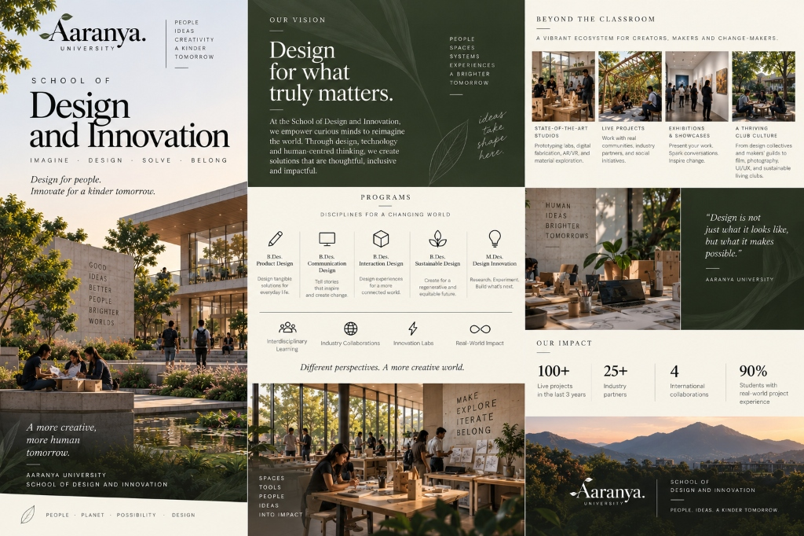

“Design for what truly matters.” Empowering curious minds to reimagine products, communications, spaces, and digital interactions through human-centred empathy.
At the School of Design and Innovation, we empower curious minds to reimagine the world. Through design, technology, and human-centred thinking, we create solutions that are thoughtful, inclusive, and impactful.

Spaces · Tools · People · Ideas · Into Impact
Rapid prototyping labs, CNC milling, 3D laser cutters, AR/VR spatial rigs, and sustainable material exploration workshops.
Direct field engagements with regional craft communities, municipal transit departments, healthcare clinics, and social ventures.
Annual Aaranya Design Triennale, peer critiques, open gallery nights, and international design award competitions.
Active design collectives: Makers Guild, Typography Society, Interaction/UX Lab, Film & Photography Guild, and Sustainable Living Collective.
Rigorous studio foundations, material explorations, digital software fluency, and community capstones across 5 accredited degree tracks.
4 Years · 8 Semesters · 160 Credits · “Design tangible solutions for everyday life.”
4 Years · 8 Semesters · 160 Credits · “Tell stories that inspire and create change.”
4 Years · 8 Semesters · 160 Credits · “Design experiences for a more connected world.”
4 Years · 8 Semesters · 160 Credits · “Create for a regenerative and equitable future.”
2 Years · 4 Semesters · 80 Credits · “Research. Experiment. Build what's next.”
3–5 Years · Doctoral Degree · Frontier Research in Human-Centred Inquiry
Submit your creative portfolio, sketchbook, or problem-solving prototypes for evaluation by our faculty jury.